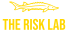
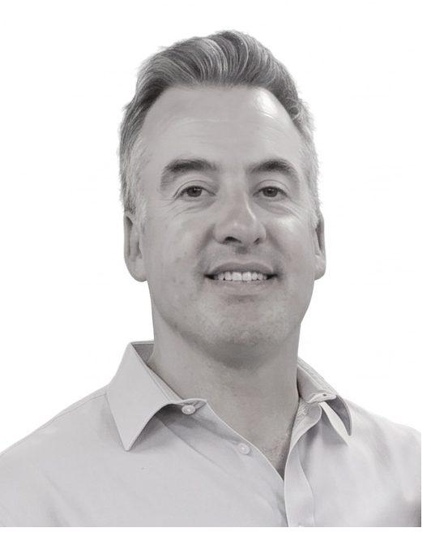

The Risk Lab is an AI Native risk and control consultancy. We combine senior risk, internal audit and commercial experience with the flexibility and direct attention of a small specialist team. Our work is focused on the issues that matter — we avoid unnecessary complexity, lengthy methodologies and recommendations that look good on paper but are difficult to implement.
Robert has over 15 years of experience helping businesses understand and manage operational, financial and fraud risks.
His background includes roles at Deloitte, MultiChoice and Naspers/Prosus, where he supported technology, media, fintech and marketplace businesses across the world with risk management.
He founded The Risk Lab to give clients direct access to experienced risk support without the layers and overheads of a large consulting firm. His approach is direct, commercially aware and focused on helping management solve problems — not merely documenting them.
Robert's surname makes the mark authentic — but the reasoning behind it stands on its own.

Long before it became our mark, the sturgeon had already mastered a demanding environment. It's ancient and long-lived — slow to mature, resilient and built for the long term.
Many sturgeon move between sea and river. At the right time, they turn upstream, work against resistance and return to freshwater to spawn. Once the work is done, they move downstream and continue the cycle.
Their roe becomes caviar — something rare and valuable, created through patience, care and disciplined stewardship.
For The Risk Lab, that's the point: we help businesses move against complexity, strengthen what lies beneath the surface, and turn disciplined risk and control work into something that lasts.
The people behind The Risk Lab.
Dineo brings more than six years of post-articles experience across corporate finance, accounting and consulting. At The Risk Lab, she supports finance-process reviews, data analysis and the development of practical financial controls. Her strong financial background enables her to understand complex processes quickly and translate financial, operational and control issues into clear and actionable recommendations.

Daniel has more than 20 years of experience delivering complex projects across FMCG, construction and mining. He helps ensure Risk Lab engagements are well planned, efficiently managed and translated into clear, actionable outcomes. His practical project-management experience supports the successful coordination of stakeholders, deliverables and implementation activities.
The fish gives us a disciplined way of describing how we see, think and work.
Disciplined attention reveals hidden risk, weak controls and unclear accountability.
Build controls and processes that remain useful as the business grows.
Layered safeguards should create resilience without unnecessary bureaucracy.
Move against complexity to find the risks management most needs to understand.
Look beneath symptoms, then support ownership, implementation and closure.
Turn careful analysis and experienced judgement into something genuinely valuable.
Engagements can be structured as focused projects or ongoing support, depending on the client's requirements. We work with organisations that need an independent review, help resolving a specific issue or access to experienced risk support without appointing a full-time senior resource.
Book a free consultation — no obligation, just a conversation about where your risks are.